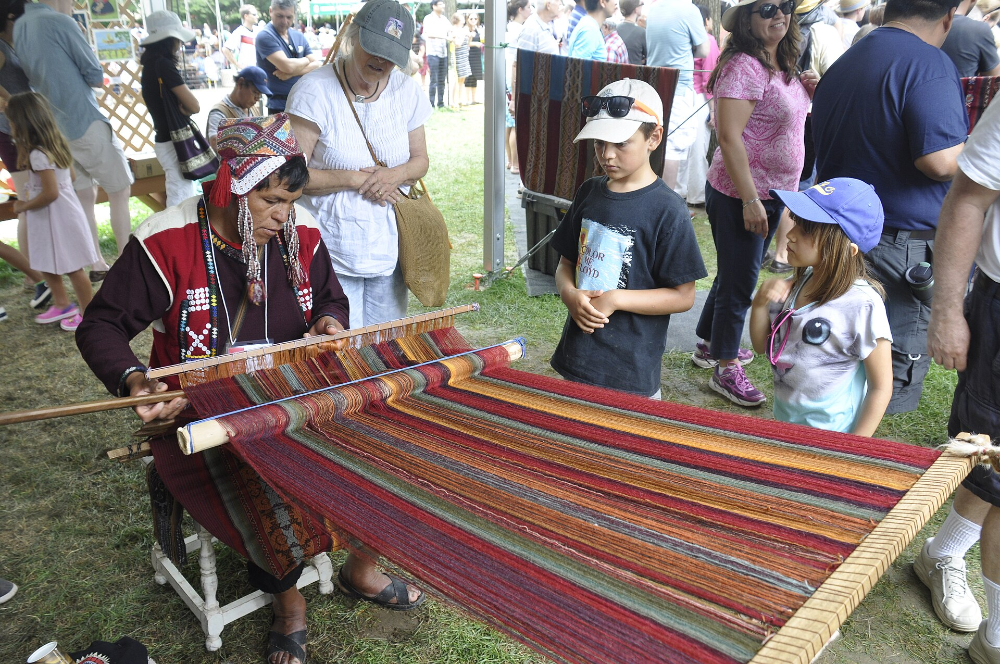

Tecidos e roupas
Tecelagem, bordados e roupas tradicionais carregam técnicas e identidades locais. As formas de vestir variam entre comunidades e ocasiões.

Uma identidade que vive nas línguas, nos tecidos, na música e no corpo.
A história Inca é um capítulo importante. A identidade peruana é ainda mais diversa.
Comunidades quéchuas e aimarás, outros povos dos Andes e diversos povos amazônicos mantêm conhecimentos, línguas e modos de viver. Influências europeias, afroperuanas e de outras migrações também fazem parte dessa construção.
Espanhol, quéchua, aimará e outras línguas originárias expressam pertencimento. Valorizar esses idiomas também significa pensar em educação e atendimento de saúde que respeitem a população.
A cultura aparece no cotidiano e nas festas, não apenas nos lugares visitados por turistas.
Tecelagem, bordados e roupas tradicionais carregam técnicas e identidades locais. As formas de vestir variam entre comunidades e ocasiões.
Instrumentos andinos, cerâmicas e peças têxteis expressam saberes transmitidos em famílias e comunidades.
Celebrações religiosas e comunitárias reúnem música, dança e memória. Elas fortalecem vínculos e fazem a história continuar no presente.
Danza de las Tijeras

Com origem nas comunidades quéchuas dos Andes centro-sul do Peru, a dança envolve competição ritual entre grupos de dançarinos e músicos.
O dançarino segura duas lâminas metálicas semelhantes a tesouras e as faz soar. Harpa e violino acompanham passos, saltos, giros e desafios acrobáticos.
Força, equilíbrio, coordenação e resistência física são fundamentais. Os desafios fazem parte de uma tradição transmitida entre gerações e ligada à vida das comunidades.
Custos de transporte, distância e tempo disponível podem limitar a participação em festas, encontros e práticas corporais. Pensar em desigualdade também é perguntar quem consegue participar e transmitir seus saberes.
As culturas peruanas continuam vivas e se transformam, inclusive nas cidades. Condições sociais diferentes não tornam uma cultura menos importante.
UNESCO: transmissão da Dança das Tesouras nas comunidades e em espaços urbanos. A relação com acesso e participação é uma reflexão desta exposição.Observe a coordenação entre movimento, som e equilíbrio. A dança é uma prática corporal e também uma forma de pertencimento.
Carregando vídeo local.
Observe como a Dança das Tesouras combina música, equilíbrio, resistência e movimentos acrobáticos. Sua origem está em comunidades quéchuas dos Andes centro-sul; a UNESCO a reconheceu como Patrimônio Cultural Imaterial da Humanidade em 2010.
Conheça a manifestação e seus registros audiovisuais na página oficial da UNESCO, fonte complementar.
O marcador de página da nossa mesa leva uma lembrança do Peru. Leve também uma descoberta sobre sua cultura.